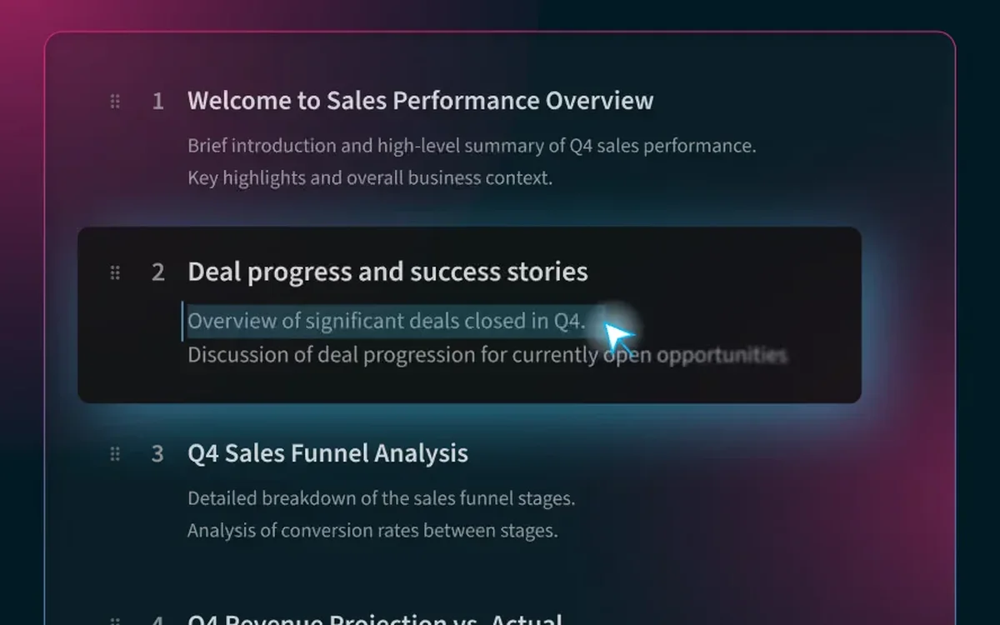
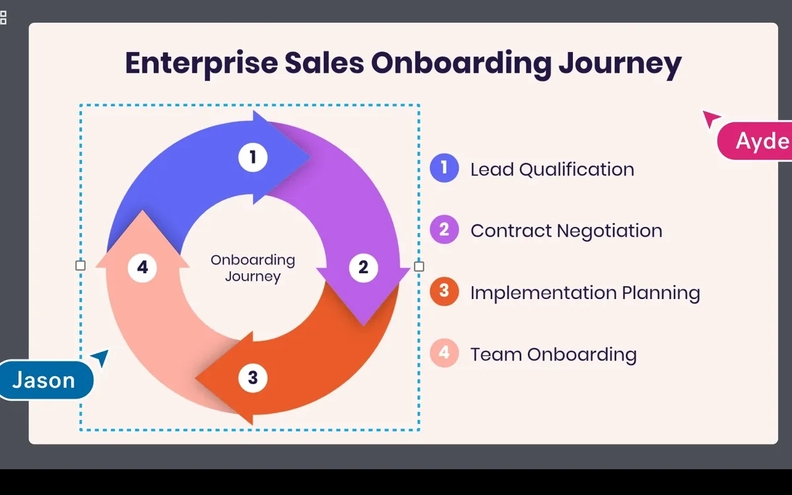
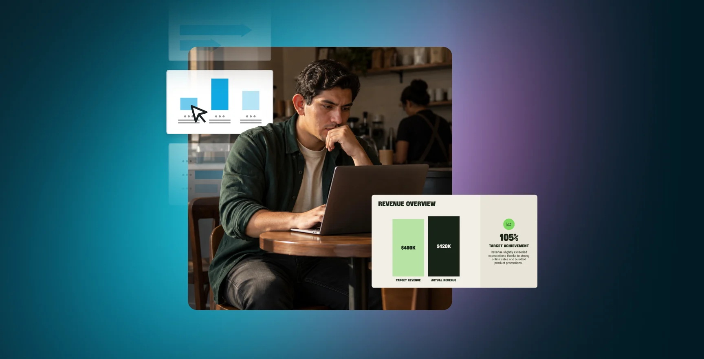
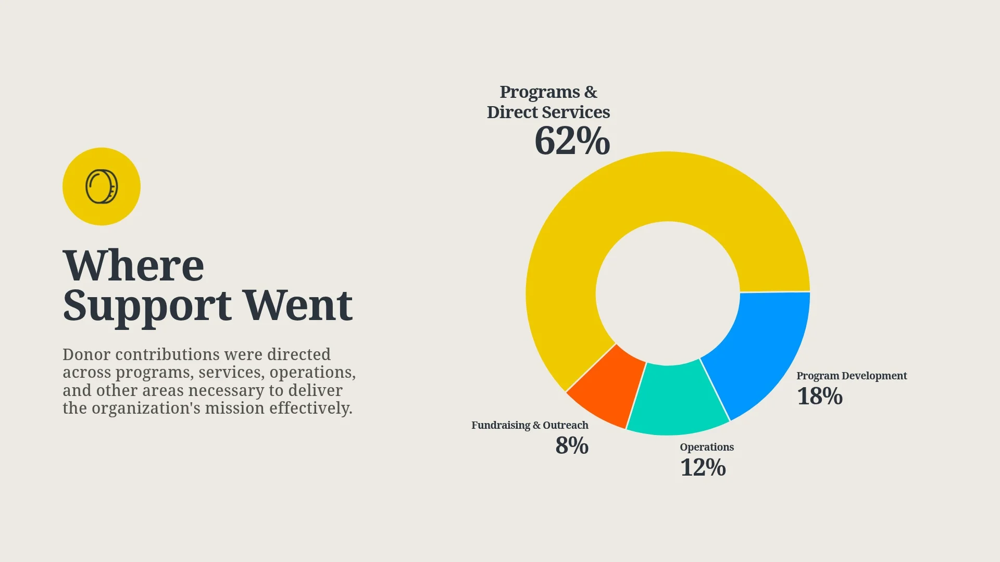
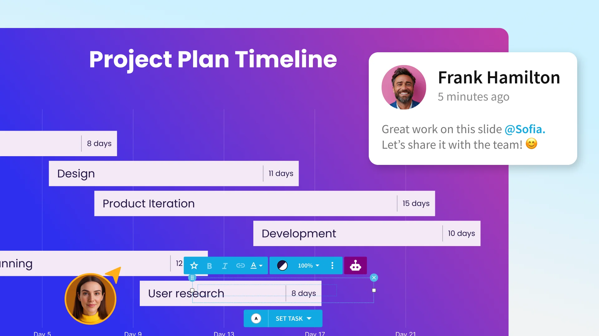

1Her in flow, thinking and creating
2The idea on her screen, soft
Product presence We keep professionals and their ideas in their best light. Our approach is documentary storytelling made ready for commercial use: real people doing real work, and the ideas they build in our product, each lit so it looks its best.
Every story moves through 3 beats, and every frame has 1 hero: the professional or the idea.
Read across a row to follow the story, and down a column to compare the 2 heroes in the same beat. Each beat sets what we look at first, where the light falls and how much of the product we show.
Swipe to move through the beats →
Asset to make
A tight crop inside the product. Her cursor is large and glowing, with her manager’s smaller cursor beside it on the same element.

12
12The professionalHer in flow, thinking and creating
The ideaThe idea in its soft clay state: prompts and draft outlines
The professionalHer presence and influence in the product. Less product, more of her
The ideaThe content taking shape, like a chart, with her as a smaller cursor
The professionalHer showing up ready, in a video bubble, a room or a call
The ideaThe slide, big and whole. Her talking head small, or gone
The professionalOn her: a glow from the screen, or sun or room light
The ideaBrand color around the UI, the idea or the prompt
The professionalHer cursor and its influence, brightest
The ideaThe work area she is changing, brightest
The professionalShe is the brightest thing in frame
The ideaThe whole slide is the brightest, most vibrant thing
The professionalSome
The ideaHigh
The professionalMedium: more of her, less product
The ideaPeaks
The professionalLow
The ideaLow
We pick the layers each beat needs, and each layer keeps its own color.
The professional's world and the product are 2 color universes, so we never match their hues. We pair them through light and depth, so every frame reads as part of the same story.

1234Base Blue, Gallery Grey or the brand gradient. This is our brand, and it sets the ground for everything above it.
She leads every frame, in warm natural light. She is in all 3 beats.
The product in full: neutral panels in light or dark mode, Ready Rose for AI and Agency Azul for her actions. It rises and falls with the beat.
Her slides, in whatever theme the deck uses. The idea is the point of every frame, and it brings the most color.
Every image shows the professional and the idea, and these 5 rules hold in every beat.
The professional and the idea are always the subject. Our product appears as much as the beat calls for: front and center while she shapes and crafts, quiet while she presents.
01
The professional. Turn her face toward warm sun so it spotlights her.
The idea. Her slides sit in a soft Azul and Rose glow on Gallery Grey or Base Blue, never brighter than she is.
02
The professional. Catch her mid-work, the way a documentary photographer would. Nobody poses.
The idea. Every slide is one she could build today, from a real industry with plausible numbers. Never a mock-up.
03
The professional. Hold 1 hero with room to breathe, eye line on a third.
The idea. Show 1 idea per frame: 1 slide sharp, everything else soft.

04
The professional. Shoot from table height past a soft foreground object, so we feel in the room.
The idea. Her slides layer in depth and run past the frame edge, so the work feels bigger than the frame.
05
The professional. The idea moves from her to the screen, as part of the work.
The idea. The product scaffolds it: AI shapes it, Smart Slides craft it, and teammates move it forward.

Casting and wardrobe. Cast wide across role, age, geography, ability and body, so every pro sees their team. Dress them in quiet neutrals, with brand color under 10% of the frame.
Our builder writes on-brand photo prompts that follow these rules.
Pick the details, and the builder writes a prompt for ChatGPT or Figma. A second step gives you a prompt that places real slides and product into the image.
Open the builder in its own page and keep it beside your work.
Open the builder